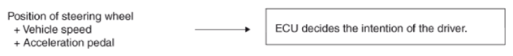
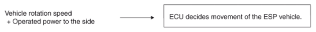
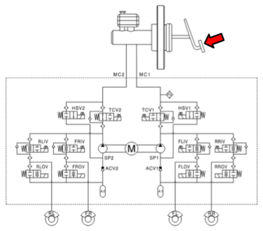

The ESP analyzes the intention of the driver.

It analyzes the movement of the ESP vehicle.

The HECU calculates the required strategy, then actuates the appropriate valves and sends torque control requests via CAN to maintain vehicle stability.
